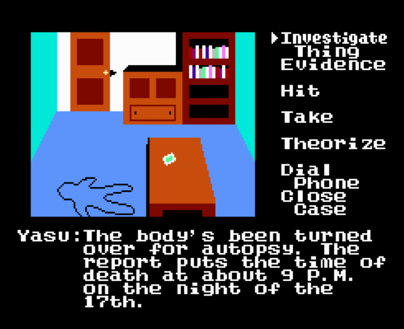
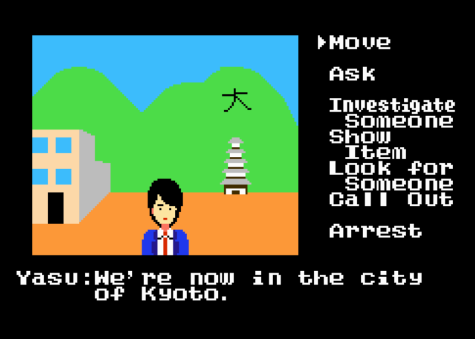
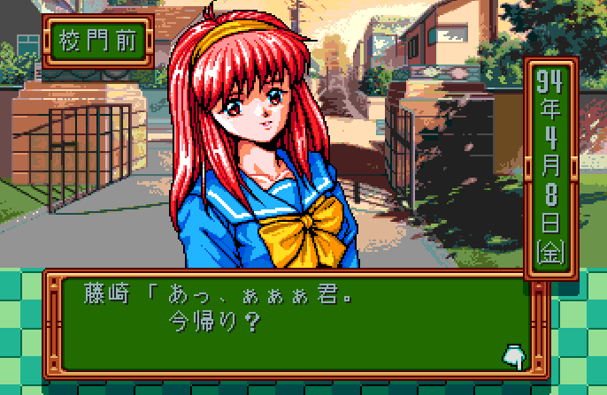
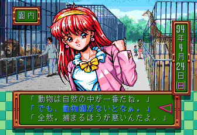

Visual Novel-history
Meaning of "Visual Novel"
Visual novels are games which often get described as 'interactive books'. The player can decide between different decisions which all lead to different endings of the game. They mostly get played in Japan, which is also the origin of these games. 70% of the PC games released in Japan in 2006, are visual novels. In Japan, there is a difference made between the novel-part and the adventure-part in the visual novel. The novel-part consists mostly of the story and very few interactive parts. On the other hand, the adventure-part has more of the problem-solving and active gameplay.
Visuals and Manga influence
The games were basically a string of puzzels for the player to slove. The player had to pick up certain objects, Otherwise they wouldn't be able to handle the challenges they encounter later in the game. This design shows up throughout Portopia, where the player analyzes a crime scene for clues that will advance the narrative.
 While visual novels would slowly fade out puzzle-oriented design in favor of narrative, all of their other structures remained intact, including their visuals. Early visual novels had a more manga like style, each panel was composed as a whole, its angles and shapes and other visual elements coming together to create a very specific scene or convey a particular mood.
So when we look at early visual novels, we see them employing the same kinds of panel transitions that comics and manga had been comfortable using for years. Panel transitions aren't the only strategy early visual novels borrow from manga. Subjective motion lines show up in Dennou Tenshi at the bottom, and both manga and visual novels represent movement in similar ways, albeit for different reasons. Yet out of all the techniques early visual novels borrowed from manga, panel transitions have proven the most useful.
The biggest change to Visual Novels came with Tokimeki's visuals. In the game the player can take any girl from it, to any location in the game. The old strategy of composing shots for specific scenes just wasn't feasible for this kind of game. So unable to create distinct images for every situation the player could encounter, Konami instead decided to compile generic assets that could be swapped out depending on the situation.
 Where previous visual novels could only muster a few different expressions per shot, Tokimeki's sprites allowed Konami to create as many as six expressions per character . Many writers have compared this to watching anime or reading manga. The trade-off from this arrangement is that while visual novels can no longer frame a scene to create a specific effect, they encourage the player to approach the narrative in a way early visual novels didn't.
It's because things are only suggested that the player has the space they need to put the story together as they see fit. Far from watching a narrative passively unfold before them, the player becomes an active participant in it, filling in the gaps that either the story or the visuals leave blank. It's up to the player to use the combined text and visuals to interpret what they're seeing. This isn't to say that later visual novels haven't experimented with their form.
Indeed, some visual novels really do feel like watching an anime or reading a novel. Yet both within individual games and in the genre at large, manga shots are the exception, not the rule. Theatrics remain the dominant mode of communication for the modern visual novel.